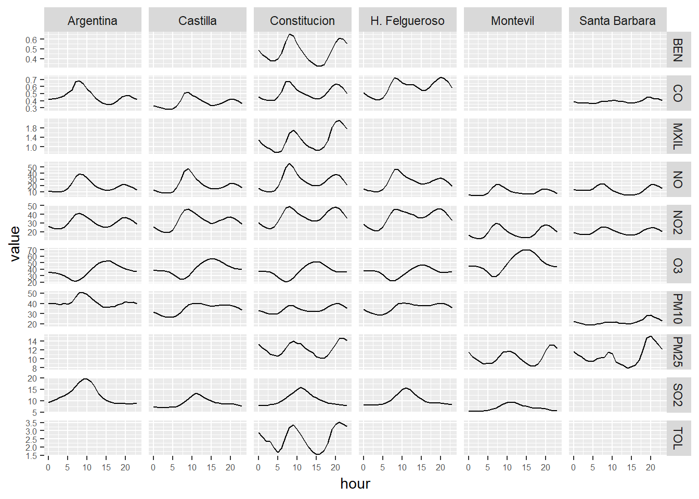
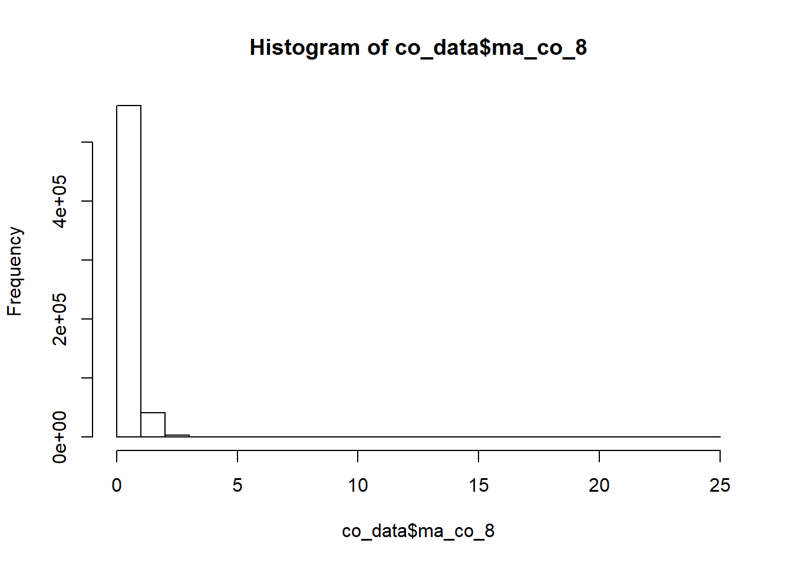
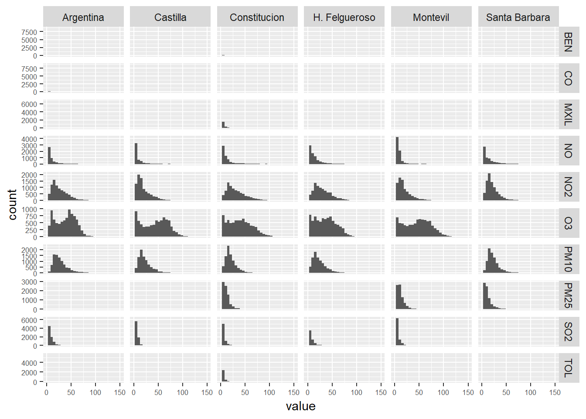

8 Data Exploration
Loading packages
library(readr)
library(dplyr)
library(tidyr)
library(openair) # http://davidcarslaw.github.io/openair/
library(purrr)
library(lubridate)
library(ggplot2)
library(stringr)
library(knitr)
library(xts)
library(zoo)
library(gridExtra)
library(astsa)
library(rvest)
library(fpp2)
library(ranger)
library(broom)
library(RcppRoll)
library(reshape2)Data loading
air_data_2 <- readRDS("data_rds/air_data_2.rds")We take a look to the general trend of several indicators through the last 18 years
# We calcule the yearly mean of the pollutants levels.
year_avgs <- air_data_2 %>% select(station_alias, date_time_utc, PM10, PM25, SO2, NO2, NO, O3, BEN, CO, MXIL, TOL) %>%
group_by(station_alias, year = year(date_time_utc)) %>%
summarise_all(funs(mean(., na.rm = TRUE))) %>%
select(-date_time_utc) # We drop this variable
# We export the years_avgs as a csv file
write_csv(year_avgs, "data_final_csvs/year_avgs.csv")
# We convert the table to long format
year_avgs_long <- gather(year_avgs, contaminante, value, 3:length(year_avgs)) %>%
filter(!(station_alias == 'Constituci?n' & year == '2006' & contaminante %in% c('BEN', 'MXIL', 'TOL'))) %>% # We filter this data because is only completed in 0.01%
filter(!(station_alias == 'Constituci?n' & year == '2008' & contaminante == 'PM25')) # We filter this data because is only completed in 0.02%
# We present the data in a grid of graphs
ggplot(year_avgs_long, aes(x = year, y = value)) +
geom_line() +
facet_grid(contaminante~station_alias,scales="free_y") +
theme(axis.text = element_text(size = 6))
We drop the Santa Bárbara and Montevil stations. These stations have much less data and the behavior of their variables are significantly different (they are sub-urban stations). So, we take them out from the analysis for now.
air_data_3 <- air_data_2 %>% filter(station_alias != 'Montevil' ,
station_alias != 'Santa B?rbara' )# We calcule the yearly mean of the pollutants levels.
year_avgs <- air_data_3 %>% select(station_alias, date_time_utc, PM10, PM25, SO2, NO2, NO, O3, BEN, CO, MXIL, TOL) %>%
group_by(station_alias, year = year(date_time_utc)) %>%
summarise_all(funs(mean(., na.rm = TRUE))) %>%
select(-date_time_utc) # quito ahora esta variable, porque no tiene sentido que salga su media.
# We convert the table to long format
year_avgs_long <- gather(year_avgs, contaminante, value, 3:length(year_avgs)) %>%
filter(!(station_alias == 'Constituci?n' & year == '2006' & contaminante %in% c('BEN', 'MXIL', 'TOL'))) %>% # We filter this data because is only completed in 0.01%
filter(!(station_alias == 'Constituci?n' & year == '2008' & contaminante == 'PM25')) # We filter this data because is only completed in 0.02%
# We present the data in a grid of graphs
ggplot(year_avgs_long, aes(x = year, y = value)) +
geom_line() +
facet_grid(contaminante~station_alias,scales="free_y") +
theme(axis.text = element_text(size = 6))
# We calcule the hourly mean of the pollutants levels.
hour_avgs <- air_data_3 %>% select(station_alias, hour, PM10, PM25, SO2, NO2, NO, O3, BEN, CO, MXIL, TOL) %>%
group_by(station_alias, hour) %>%
summarise_all(funs(mean(., na.rm = TRUE))) # quito ahora esta variable, porque no tiene sentido que salga su media.
# We convert the table to long format
hour_avgs_long <- gather(hour_avgs, contaminante, value, 3:length(hour_avgs))
# We present the data in a grid of graphs
ggplot(hour_avgs_long, aes(x = hour, y = value)) +
geom_line() +
facet_grid(contaminante~station_alias,scales="free_y") +
theme(axis.text = element_text(size = 6))
# We calcule the monthly mean of the pollutants levels.
month_avgs <- air_data_3 %>% select(station_alias, month, PM10, PM25, SO2, NO2, NO, O3, BEN, CO, MXIL, TOL) %>%
group_by(station_alias, month) %>%
summarise_all(funs(mean(., na.rm = TRUE))) # quito ahora esta variable, porque no tiene sentido que salga su media.
# We convert the table to long format
month_avgs_long <- gather(month_avgs, contaminante, value, 3:length(month_avgs))
# We present the data in a grid of graphs
ggplot(month_avgs_long, aes(x = month, y = value)) +
geom_line() +
facet_grid(contaminante~station_alias,scales="free_y") +
theme(axis.text = element_text(size = 6))
# We calcule the weekly mean of the pollutants levels.
week_day_avgs <- air_data_3 %>% select(station_alias, week_day, PM10, PM25, SO2, NO2, NO, O3, BEN, CO, MXIL, TOL) %>%
group_by(station_alias, week_day) %>%
summarise_all(funs(mean(., na.rm = TRUE))) # quito ahora esta variable, porque no tiene sentido que salga su media.
# We convert the table to long format
week_day_avgs_long <- gather(week_day_avgs, contaminante, value, 3:length(week_day_avgs))
# We present the data in a grid of graphs
ggplot(week_day_avgs_long, aes(x = week_day, y = value)) +
geom_line() +
facet_grid(contaminante~station_alias,scales="free_y") +
theme(axis.text = element_text(size = 6))
8.1 Relationships between variables
The Constitucion Station is the only station with meteorological data. So, we are going to focus our efforts of data exploration on this station.
#This is from the future ;) (tengo que copiar el codigo aqui)
constitucion_data <- readRDS("data_rds/constitucion_data.rds")
pollutants <- constitucion_data %>% select(PM10, PM25, NO2, NO, SO2, CO, O3) %>%
na.omit()cor_matrix <- round(cor(pollutants), 2)
head(cor_matrix)## PM10 PM25 NO2 NO SO2 CO O3
## PM10 1.00 0.56 0.50 0.49 0.29 0.38 -0.26
## PM25 0.56 1.00 0.37 0.37 0.21 0.29 -0.26
## NO2 0.50 0.37 1.00 0.68 0.30 0.47 -0.59
## NO 0.49 0.37 0.68 1.00 0.29 0.44 -0.45
## SO2 0.29 0.21 0.30 0.29 1.00 0.28 -0.23
## CO 0.38 0.29 0.47 0.44 0.28 1.00 -0.29long_cor_matrix <- melt(cor_matrix)
head(long_cor_matrix)## Var1 Var2 value
## 1 PM10 PM10 1.00
## 2 PM25 PM10 0.56
## 3 NO2 PM10 0.50
## 4 NO PM10 0.49
## 5 SO2 PM10 0.29
## 6 CO PM10 0.38ggplot(data = long_cor_matrix, aes(x=Var1, y=Var2, fill=value)) +
geom_tile()
# Get lower triangle of the correlation matrix
get_lower_tri<-function(cor_matrix){
cor_matrix[upper.tri(cor_matrix)] <- NA
return(cor_matrix)
}
# Get upper triangle of the correlation matrix
get_upper_tri <- function(cor_matrix){
cor_matrix[lower.tri(cor_matrix)]<- NA
return(cor_matrix)
}
upper_tri <- get_upper_tri(cor_matrix)
upper_tri## PM10 PM25 NO2 NO SO2 CO O3
## PM10 1 0.56 0.50 0.49 0.29 0.38 -0.26
## PM25 NA 1.00 0.37 0.37 0.21 0.29 -0.26
## NO2 NA NA 1.00 0.68 0.30 0.47 -0.59
## NO NA NA NA 1.00 0.29 0.44 -0.45
## SO2 NA NA NA NA 1.00 0.28 -0.23
## CO NA NA NA NA NA 1.00 -0.29
## O3 NA NA NA NA NA NA 1.00# Melt the correlation matrix
library(reshape2)
long_cor_matrix <- melt(upper_tri, na.rm = TRUE)
# Heatmap
library(ggplot2)
ggplot(data = long_cor_matrix, aes(Var2, Var1, fill = value))+
geom_tile(color = "white")+
scale_fill_gradient2(low = "blue", high = "red", mid = "white",
midpoint = 0, limit = c(-1,1), space = "Lab",
name="Pearson\nCorrelation") +
theme_minimal()+
theme(axis.text.x = element_text(angle = 45, vjust = 1,
size = 12, hjust = 1))+
coord_fixed()
reorder_cor_matrix <- function(cor_matrix){
# Use correlation between variables as distance
dd <- as.dist((1-cor_matrix)/2)
hc <- hclust(dd)
cor_matrix <-cor_matrix[hc$order, hc$order]
}
# Reorder the correlation matrix
cor_matrix <- reorder_cor_matrix(cor_matrix)
upper_tri <- get_upper_tri(cor_matrix)
# Melt the correlation matrix
long_cor_matrix <- melt(upper_tri, na.rm = TRUE)
# Create a ggheatmap
ggheatmap <- ggplot(long_cor_matrix, aes(Var2, Var1, fill = value))+
geom_tile(color = "white")+
scale_fill_gradient2(low = "blue", high = "red", mid = "white",
midpoint = 0, limit = c(-1,1), space = "Lab",
name="Pearson\nCorrelation") +
theme_minimal()+ # minimal theme
theme(axis.text.x = element_text(angle = 45, vjust = 1,
size = 12, hjust = 1))+
coord_fixed()
# Print the heatmap
print(ggheatmap)
ggheatmap +
geom_text(aes(Var2, Var1, label = value), color = "black", size = 4) +
theme(
axis.title.x = element_blank(),
axis.title.y = element_blank(),
panel.grid.major = element_blank(),
panel.border = element_blank(),
panel.background = element_blank(),
axis.ticks = element_blank(),
legend.justification = c(1, 0),
legend.position = c(0.6, 0.7),
legend.direction = "horizontal")+
guides(fill = guide_colorbar(barwidth = 7, barheight = 1,
title.position = "top", title.hjust = 0.5))
Including information about force and direction of the wind
#This is from the future ;) (tengo que copiar el codigo aqui)constitucion_data <- air_data_2 %>% filter(station == "1")
pollutants <- constitucion_data %>% select(PM10, PM25, NO2, NO, SO2, CO, O3, dd, vv, TMP, PRB, LL, HR, RS) %>%
na.omit()
cor_matrix <- round(cor(pollutants), 2)
long_cor_matrix <- melt(cor_matrix)
head(long_cor_matrix)## Var1 Var2 value
## 1 PM10 PM10 1.00
## 2 PM25 PM10 0.56
## 3 NO2 PM10 0.50
## 4 NO PM10 0.49
## 5 SO2 PM10 0.29
## 6 CO PM10 0.38# Get lower triangle of the correlation matrix
get_lower_tri<-function(cor_matrix){
cor_matrix[upper.tri(cor_matrix)] <- NA
return(cor_matrix)
}
# Get upper triangle of the correlation matrix
get_upper_tri <- function(cor_matrix){
cor_matrix[lower.tri(cor_matrix)]<- NA
return(cor_matrix)
}
upper_tri <- get_upper_tri(cor_matrix)
upper_tri## PM10 PM25 NO2 NO SO2 CO O3 dd vv TMP PRB LL
## PM10 1 0.56 0.50 0.49 0.29 0.38 -0.26 0.01 -0.14 0.03 0.00 -0.09
## PM25 NA 1.00 0.37 0.37 0.21 0.29 -0.26 0.02 -0.18 -0.06 0.04 -0.07
## NO2 NA NA 1.00 0.68 0.30 0.47 -0.59 0.13 -0.35 -0.23 -0.09 0.01
## NO NA NA NA 1.00 0.29 0.44 -0.45 0.09 -0.23 -0.17 -0.03 -0.03
## SO2 NA NA NA NA 1.00 0.28 -0.23 0.11 -0.10 -0.05 -0.01 -0.03
## CO NA NA NA NA NA 1.00 -0.29 0.07 -0.17 -0.15 -0.04 0.01
## O3 NA NA NA NA NA NA 1.00 -0.30 0.61 0.27 -0.06 0.02
## dd NA NA NA NA NA NA NA 1.00 -0.35 -0.23 0.02 0.04
## vv NA NA NA NA NA NA NA NA 1.00 0.24 -0.12 0.03
## TMP NA NA NA NA NA NA NA NA NA 1.00 -0.03 -0.12
## PRB NA NA NA NA NA NA NA NA NA NA 1.00 -0.13
## LL NA NA NA NA NA NA NA NA NA NA NA 1.00
## HR NA NA NA NA NA NA NA NA NA NA NA NA
## RS NA NA NA NA NA NA NA NA NA NA NA NA
## HR RS
## PM10 0.06 0.00
## PM25 0.08 -0.02
## NO2 0.04 -0.19
## NO 0.01 -0.08
## SO2 -0.12 0.04
## CO 0.10 -0.11
## O3 -0.20 0.35
## dd 0.02 -0.25
## vv -0.30 0.53
## TMP -0.15 0.39
## PRB 0.01 0.06
## LL 0.15 -0.08
## HR 1.00 -0.36
## RS NA 1.00reorder_cor_matrix <- function(cor_matrix){
# Use correlation between variables as distance
dd <- as.dist((1-cor_matrix)/2)
hc <- hclust(dd)
cor_matrix <-cor_matrix[hc$order, hc$order]
}
# Reorder the correlation matrix
cor_matrix <- reorder_cor_matrix(cor_matrix)
upper_tri <- get_upper_tri(cor_matrix)
# Melt the correlation matrix
long_cor_matrix <- melt(upper_tri, na.rm = TRUE)
# Create a ggheatmap
ggheatmap <- ggplot(long_cor_matrix, aes(Var2, Var1, fill = value))+
geom_tile(color = "white")+
scale_fill_gradient2(low = "blue", high = "red", mid = "white",
midpoint = 0, limit = c(-1,1), space = "Lab",
name="Pearson\nCorrelation") +
theme_minimal()+ # minimal theme
theme(axis.text.x = element_text(angle = 45, vjust = 1,
size = 12, hjust = 1))+
coord_fixed()
ggheatmap +
geom_text(aes(Var2, Var1, label = value), color = "black", size = 4) +
theme(
axis.title.x = element_blank(),
axis.title.y = element_blank(),
panel.grid.major = element_blank(),
panel.border = element_blank(),
panel.background = element_blank(),
axis.ticks = element_blank(),
legend.justification = c(1, 0),
legend.position = c(0.6, 0.7),
legend.direction = "horizontal")+
guides(fill = guide_colorbar(barwidth = 7, barheight = 1,
title.position = "top", title.hjust = 0.5))
8.2 PM10 Constitucion Station
We create the dataset pm10 with PM10 values from the Constitución Station and we execute a summary
pm10 <- air_data_3 %>% filter(station_alias == 'Constituci?n') %>%
select(date_time_utc, PM10)
summary(pm10)## date_time_utc PM10
## Min. :NA Min. : NA
## 1st Qu.:NA 1st Qu.: NA
## Median :NA Median : NA
## Mean :NA Mean :NaN
## 3rd Qu.:NA 3rd Qu.: NA
## Max. :NA Max. : NA25% of the values are between 44.00 and 888.00. 888.00 is a value really extreme. How many extreme values (outliers) do we have in this series? We plot all the values to visualise this:
ggplot(pm10, aes(x = date_time_utc, y = PM10)) +
geom_point(alpha = 0.1) We have very few values greater than 250. So, it doesn’t seem we have a problem with the outliers (Pending: A PM10 level of 880 is something possible or is it likely to be a monitoring error?).
We have very few values greater than 250. So, it doesn’t seem we have a problem with the outliers (Pending: A PM10 level of 880 is something possible or is it likely to be a monitoring error?).
Daily averages
We create a new dataset with the PM10 daily averages and we plot them in a new graphic. We add a trend line too. There is a clear downward trend in the measurements and we have many fewer extreme values during the last decade. It seems like we have two very clear “epochs” in the data, before and after the year 2008.
pm10_day_avg <- pm10 %>% group_by(day = date(date_time_utc)) %>%
summarise(day_avg = mean(PM10, na.rm = TRUE))
ggplot(pm10_day_avg, aes(x = day, y = day_avg, , colour = day_avg)) +
geom_point(alpha = 0.5) +
geom_smooth(color = "grey", alpha = 0.2) +
scale_colour_gradientn(colours = terrain.colors(10)) +
theme(legend.position = c(0.3, 0.9),
legend.background = element_rect(colour = "transparent", fill = NA), legend.direction = "horizontal") +
labs(colour = "PM10 daily average (colour scale)", x = "Year", y = "PM10 daily average", title = "PM10 daily average - 2000-2017 evolution (Constitución Station)")
We identify a very clear trend through the years on the last graph. But, as we already saw before on the grid graphs there are other things happening at the same time.
year_const <- year_avgs_long %>% filter(station_alias == "Constitución", contaminante == 'PM10')
plot1 <- ggplot(year_const, aes(x = year, y = value)) +
geom_line()
month_const <- month_avgs_long %>% filter(station_alias == "Constitución", contaminante == 'PM10')
plot2 <- ggplot(month_const, aes(x = month, y = value)) +
geom_line()
week_day_const <- week_day_avgs_long %>% filter(station_alias == "Constitución", contaminante == 'PM10')
plot3 <- ggplot(week_day_const, aes(x = week_day, y = value)) +
geom_line()
hour_const <- hour_avgs_long %>% filter(station_alias == "Constitución", contaminante == 'PM10')
plot4 <- ggplot(hour_const, aes(x = hour, y = value)) +
geom_line()
grid.arrange(plot1, plot2, plot3, plot4, ncol = 2)